組み立て
対象モデル
| コード番号 |
|---|
| コード番号：JR1-S-C-B |
TT02をベースにJetRacer Kitを組み立てます。
カメラモジュール,LEDマウントの取り付け
| 写真 | 部品または工具 | 個数 |
|---|---|---|
 |
CAM026 IMX219-160° | 1個 |
 |
拡張ボディアッパーパネル 材質：アルミニウム |
１枚 |
 |
拡張ボディカーボンロワーパネル | 1枚 |
 |
拡張ボディカーボンエディション用カメラマウント・・・1 拡張ボディカーボンエディション用LEDマウント・・・・1 皿ねじM3*12・・・・4 皿ねじM3*10・・・・2 ナット M3・・・・6 六角穴付きボルトセルフタッピングねじM2.0*5・・・・6 |
1袋 |
 |
Color LEDボード | １枚 |
 |
六角棒レンチ 1.5 | 1個 |
| 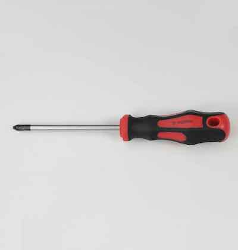 | プラスドライバー +2×100 | １本 |
 |
ナットドライバー ５．５ | １本 |
カメラマウントにカメラモジュール取り付けます。
Cameraを、M2x6のスクリューネジ 4本を六角レンチを用いて取り付けます。

六角棒レンチにより４箇所ねじ止めします。

カメラモジュール取り付け完了

LEDボードを取り付けます。
LEDマウントにLEDボードを取り付けます。

LEDマウントを２箇所ねじ止めします。

LEDボード取り付け向き 横から見た場合 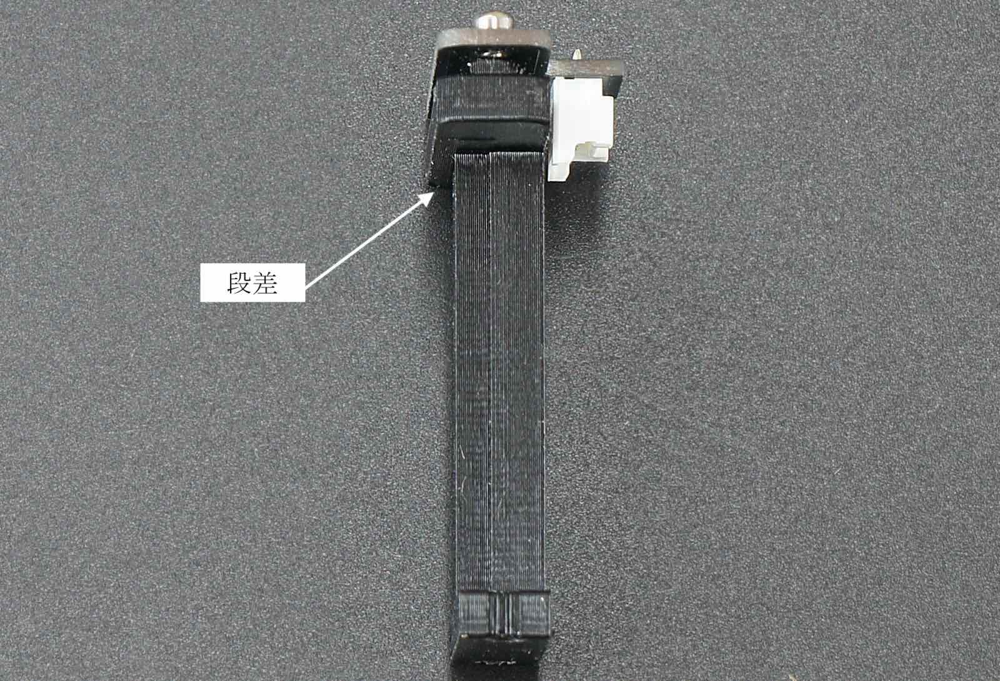
付属の六角レンチよりタッピングねじを２箇所取り付けます。
LEDボード取り付け完了

シャーシの組み立て（上側）
| 写真 | 部品または工具 | 個数 |
|---|---|---|
| 樹脂六角ボルト（黒色）M3*18・・・・4 皿ねじM3*10・・・・4 ナット M3・・・・4 |
１袋 |
以下の部品を用意します。 拡張ボディアッパーパネル １枚、拡張ボディアッパーパネルロワーパネル １枚
M3*12の皿ねじ 4個 、M3ナット 6個
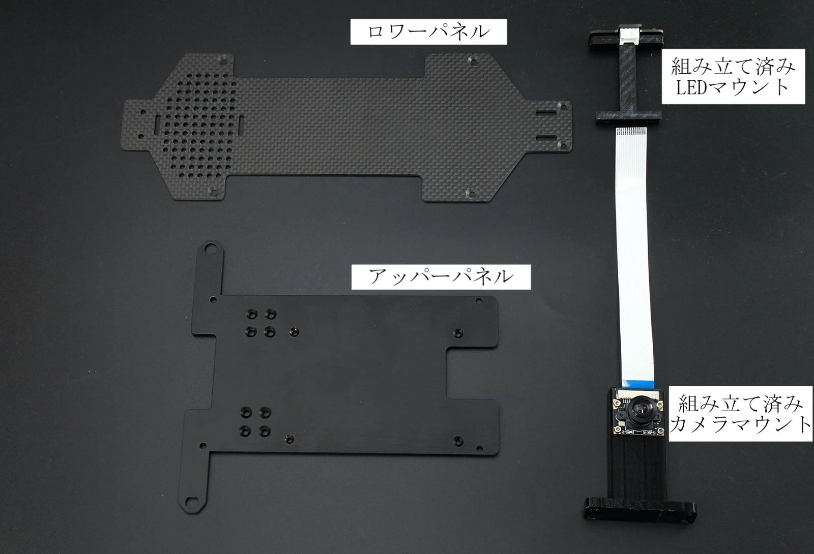
カメラマウントとアッパーパネルを結合します。アッパーパネルには皿もみがあります。皿ねじと合う面に皿ねじを刺します。

皿ねじM3*12を付属のナットドライバで４箇所を取り付けます。

ナットドライバーにてカメラマウントを取り付けます。

カメラモジュールの取り付けは完了です。
シャーシの組み立て（下側）
カーボンロワーパネルにLEDマウントを皿ねじとナットで締め取り付けます。
ネジの方向は、窪みがある方向から皿ねじを通します。

下記の矢印のところに、ねじを２箇所取り付けます。

ナットドライバーにて締め付けします。

LEDマウント取り付け完了

皿ねじ M3×10 4個 , 樹脂六角スペーサ（黒） M3×18 ４個を用意します。

ねじを締めます。

４箇所締めます。

Wifiアンテナ,Wifiモジュールの取り付け
| 写真 | 部品または工具 | 個数 |
|---|---|---|
 |
Intel Dual Bandwireless-AC 8265 Desktop Kit | １個 |
Wifiモジュールセットから金具からスパナでアンテナを取り出し、アッパーパネルの左右に取り付けます。

ケーブルを付属のスパナで取り付けます。
Wifiモジュールの取り付け
| 写真 | 部品または工具 | 個数 |
|---|---|---|
 |
Jetson Nano 開発者キットB-01 | １枚 |
 |
DCファン FD401B1H-AP00 DC5V,0.16A | １個 |
 |
FAN取り付け用アクリル | １個 |
 |
ファンねじ M2.5×14・・・・4 ナットM2.5・・・・5(ヨビ１) |
１袋 |
 |
精密ドライバセット ED−２０ | １セット |
Jetson開発者ボード,DCファン、Wifiモジュール、ファン取り付けツール、ファン取り付けねじ

Jetson開発者ボードの２つのねじを付属の精密ドライバで２箇所はずします。
※ねじの山かけに注意します。

Jetson開発者ボードからJetsonNanoを取り外します。JetsonNanoは、２箇所のつめで固定されているので、両側のつめを外側に指で軽く押します。

JetsonNanoが斜めに上がります。

JetsonNanoをはずすと、ねじとスロットが確認できます。

ドライバでねじを取り除きます。

Wifiモジュールをスロットに刺します。

黒いねじでモジュールを取り付けます。

２本のWifiアンテナケーブルとWifiモジュールを繋ぎます。

Wifiアンテナ端子とWifiモジュール端子を接続します。

JetsonNanoを開発ボードへ差し込み、ねじで取り付けます。

CPUFANの取り付け
DCファンをヒートシンクの上に載せます。

FAN取り付けツールを用意します。

ナットをFAN取り付けツールに写真のように載せます。

FAN取り付けツールをヒートシンクのフィンの間に刺して、ファン取り付けねじをCPUFANに刺します。

六角レンチでねじを締めます。

反対側も同じようにFAN取り付けジグを刺してねじをCPUFANに刺します。

同じように六角棒レンチで２箇所締めます。

ねじの締め付けが終わったら、ファン取り付けツールを取ります。

CPUFANコネクタの接続
CPUFANのコネクタをJetsonNano開発者ボードにあるコネクタに刺します。

以下の写真のようにコネクタを刺します。

CPUFAN取り付けは完了です。

JetsonNanoとパネルとの結合
| 写真 | 部品または工具 | 個数 |
|---|---|---|
 |
六角スペーサー（樹脂 両メネジ白10ミリ）・・・・4 皿ネジM2.6×5・・・・4 なべねじM2.6×5・・・・4 |
１袋 |
樹脂スペーサ、ねじを用意します。

皿ねじM2.5を４箇所刺して、
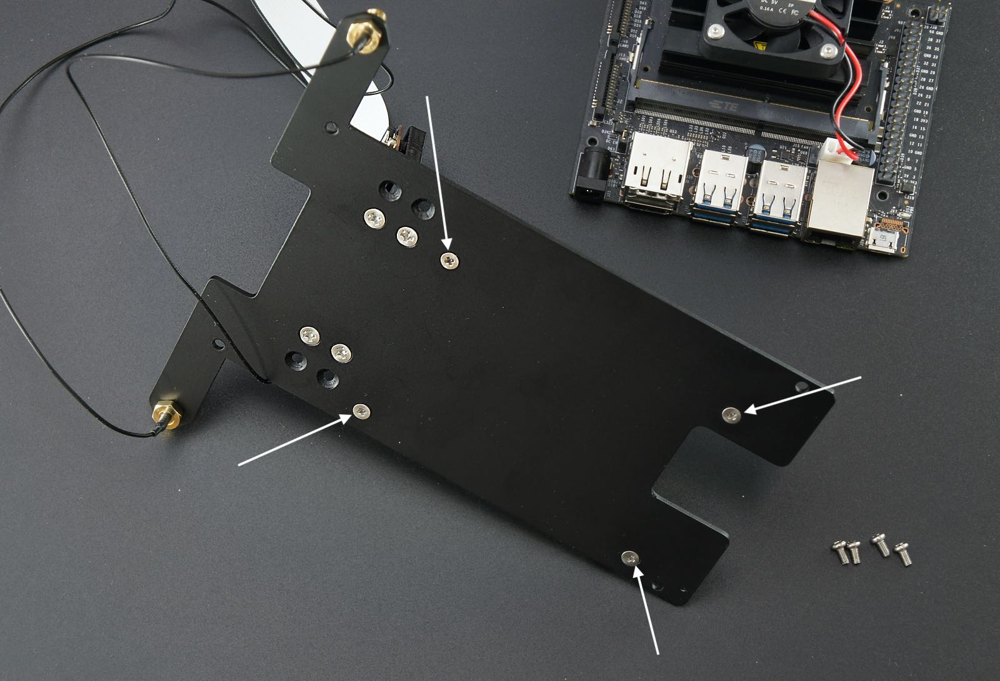
スペーサを回転させ、取り付けます。

JetsonNanoのスペーサー取り付け終了になります。

RCカーと結合
| 写真 | 部品または工具 | 個数 |
|---|---|---|
 |
RCカー本体 TT02 XBプロ エキスパートビルド ※完成品 ※車種はお選びいただくことはできません。 |
１枚 |
 |
Wifiルーター WMR-433W2 ※ボディカラーはお選びいただくことはできません。 ※写真はホワイトです。 |
１個 |
 |
Wifiルータ用 USB Cable 標準A-マイクロB（A 右向き、B左向き）0.25m | １個 |
 |
モバイルバッテリー （BI-B3） ※新パッケージの場合 |
１個 |
 |
両面テープ | ３枚 |
 |
精密ドライバー P柄 | １本 |
矢印の箇所のネジ4本を取り外します。

モーターカバーのネジ4本を取り外し、モーターカバーを取り外します。
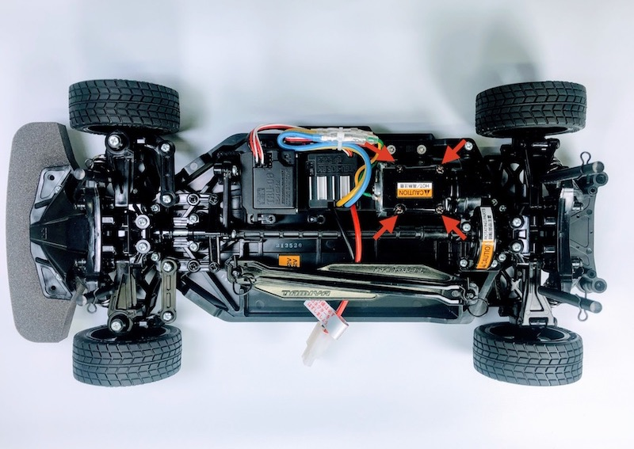

バッテリーを装着します。

ボディーとロワーパネルを用意します。
ロワーパネルをTT-02車体に載せます。

ドライバーでRCカーからはずしたねじで４箇所締めます。

アッパーパネルとJetsonNano、両面テープ３枚、無線LANルータ、モバイルバッテリーを用意します。
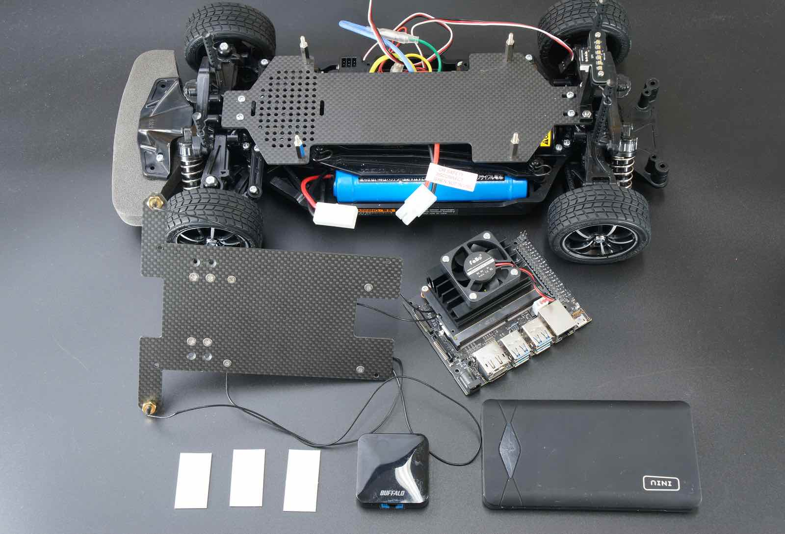
モバイルバッテリーに２枚の両面テープを貼ります。

無線LANルーターに両面テープを貼ります。

無線LANルーターとモバイルバッテリーをアッパーパネルに貼り付け、ルーターの電源ケーブルを下記の写真のように接続します。

接続すると無線LANルーターが起動しますので、モバイルバッテリーのボタンをダブルクリックして電源を切ります。

ダブルクリックすると電源がきれて、数値が表示されなくなります。
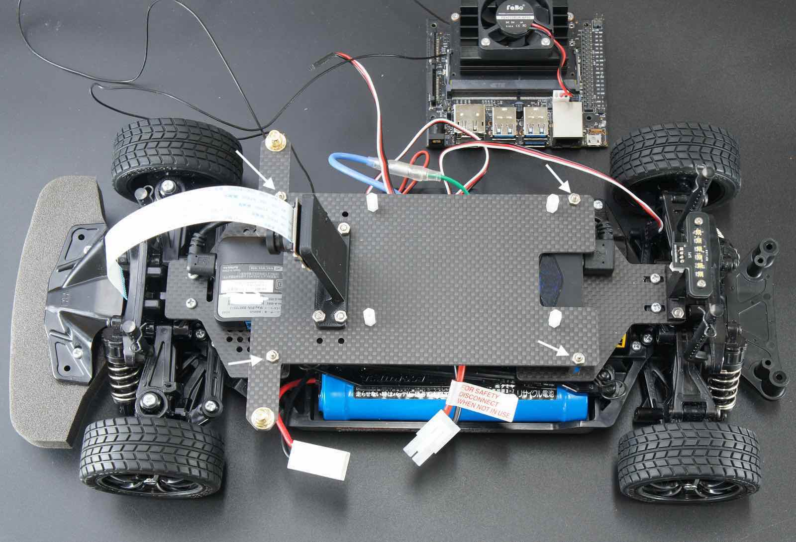
車体にアッパーパネルを載せて、ナットを４箇所をしめます。
ナットドライバーで固定します。
Jetson Nanoの取り付け

ビスを用意して、JetsonNanoをスペーサーの上の載せます。

JetsonNanoをドライバーで４箇所固定します。

JetsonNano取り付け完了です。
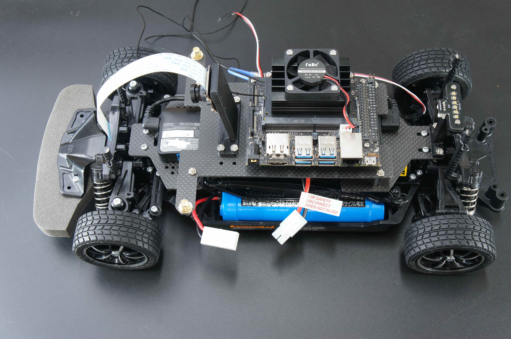
カメラケーブル接続
Jetson Nano B01 開発者キットには、CAM0,CAM1の２つのカメラポートがありますが、CAM0にカメラケーブルを接続します。

Jetson Nanoのカメラ端子のコネクタ両サイドのロックを持ち上げます。

カメラケーブルを刺します。

コネクタのロック真ん中を指で押し、固定します。
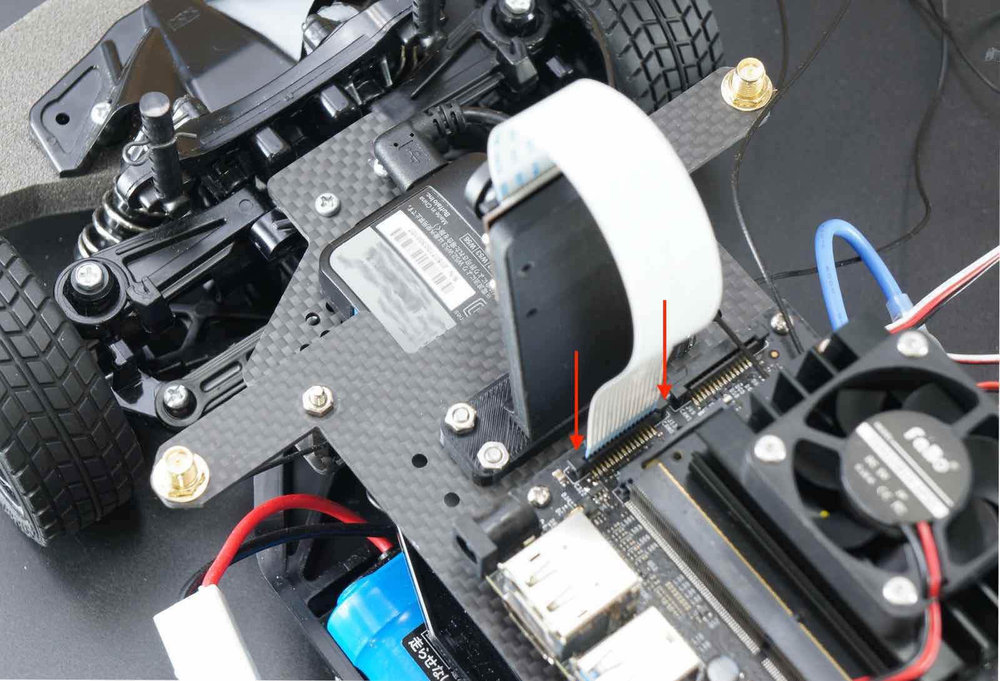
Wifiアンテナケーブルを結束
| 写真 | 部品または工具 | 個数 |
|---|---|---|
 |
結束バンド | １枚 |
Wifiアンテナケーブルを結束バンドで束ねます。

束ねたケーブルはJetsonNano基板の下に入れます。

ジャンパーピンの設定
DCジャックからJetsonNanoへ給電しますので、下の写真のように、ジャンパーピンをオープンからショートにします。

コントローラーボードの装着
| 写真 | 部品または工具 | 個数 |
|---|---|---|
 |
FaBo #612 コントローラーボード | １枚 |

コントローラーボードの取り付け完了

RCカー信号の配線
| 写真 | 部品または工具 | 個数 |
|---|---|---|
 |
RCケーブル３ピン メスプラグ 3本 | １セット |
RCカーの信号入力ケーブルを確認します。スピードコントローラから繋がっているケーブル、サーボモータに繋がっているケーブル

コントローラボードのTHをスピードコントローラ、スピードコントローラのSTをサーボに繋ぎます。

RCカー受信機出力している３つの信号をコントローラボードへ繋ぎます。

RCカー受信機からは、１〜３チャンネルの信号が出力されます。

３ピンケーブルを受信機に各ピンそれぞれ繋ぎます。
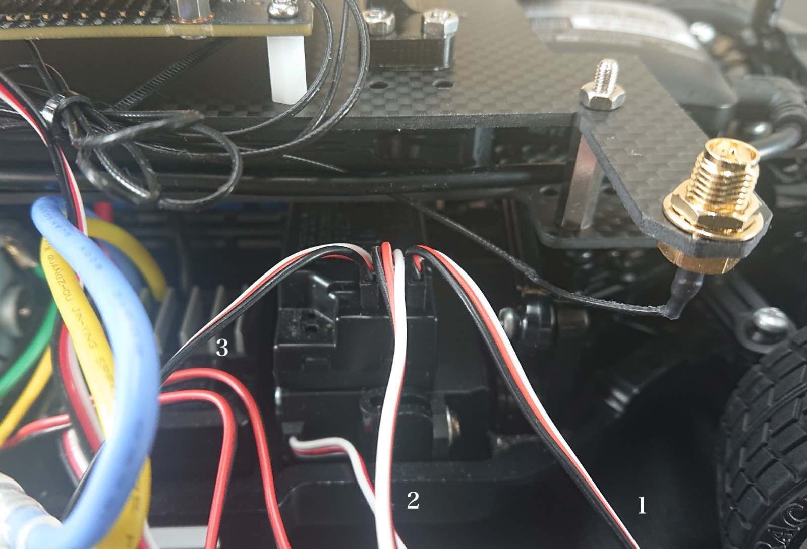
＃６１２コントローラボードの１、２、３へ接続できましたら、RCとの信号配線は完了です。

ルーターとの配線
| 写真 | 部品または工具 | 個数 |
|---|---|---|
 |
LANケーブル 0.15m | １本 |
無線LANルーターとJetsonNano開発ボードをLANケーブルで繋ぎます。

LEDボード
| 写真 | 部品または工具 | 個数 |
|---|---|---|
 |
FaBo 4pinケーブル 0.15m | １本 |
LEDボードとコントローラボードを配線します。

Wifiアンテナ
Wifiアンテナを回してたてます。

Wifiアンテナ取り付け完了。

SDカード挿入
| 写真 | 部品または工具 | 個数 |
|---|---|---|
 |
マイクロSD Card(32GB),SDカードケース サムスンEVO |
１個 |
JetsonNanoにSDカードをSDカードの端子がこちらから見えるように挿入します。

Jetson Nanoに電源を投入します。バッテリーを切断しておき、RCカーの電源は、急発進や暴走の原因となりますので、絶対に電源はオフにします。確認できたら、DCジャックをDCプラグに繋ぎます。

電源投入
| 写真 | 部品または工具 | 個数 |
|---|---|---|
 |
単三アルカリ乾電池 4本 （プロポに使用） ※写真と異なる場合がございます。 |
１枚 |
モバイルバッテリーの電源をONします。

おおよそのバッテリー残量が表示される。

Jetson Nanoの緑色の各LEDが発光します。

コントローラーボードのOLEDにIPアドレス、メモリ使用率など表示されます。

ハーネスを接続し、RCカーの電源を繋ぎます。
※電源投入時は、特にRCカーの暴走に注意してください。
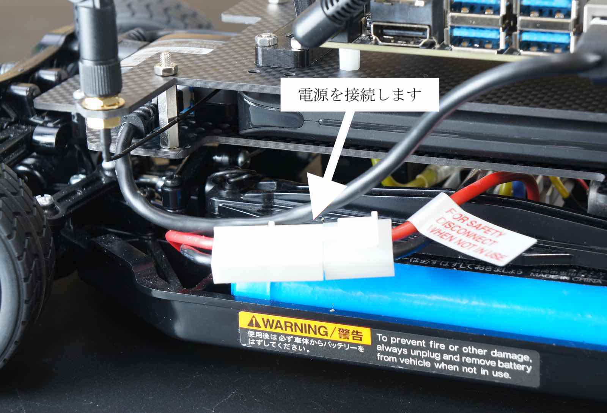
RCカーのスイッチをスライドさせ、RCカーに電源を投入します。
※電源投入時は、特にRCカーの暴走に注意してください。

TT-02のプロポに単三電池４本入れます。

プロポの電源をONします。プロポの赤色ランプが点灯します。

LEDが緑色のときは、通常のRCカーとして操作モードになります。（RCカーモード）

プロポの裏側のボタンを押すとモードが切り替えられます。

LEDが赤色のときは、JetsonNanoがRCカーを操縦するモードになります。（AIモード）

動作が確認できましたら、以上JetRacerKitの組み立ては完了となります。 カメラにレンズキャップがついている場合は取り外します。 お疲れ様でした。